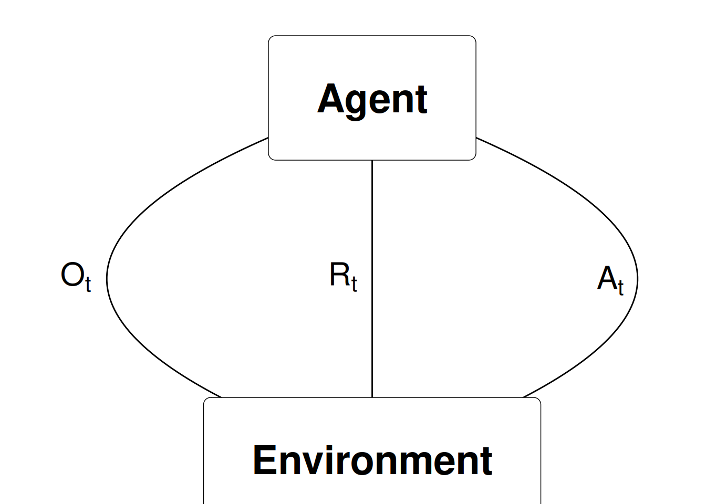
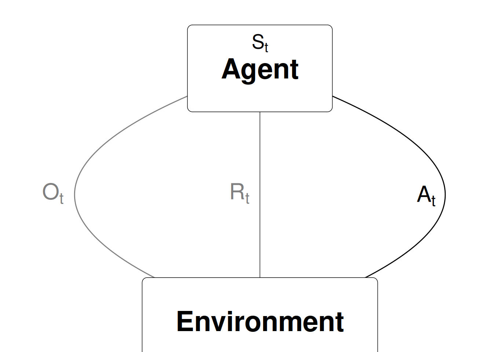

Slides for this module can be seen
here.
You do not have to look at them before the lecture!
2 An introduction to RL
This module gives a short introduction to Reinforcement learning.
2.1 Learning outcomes
By the end of this module, you are expected to:
- Describe what RL is.
- Be able to identify different sequential decision problems.
- Know what Business Analytics are and identify RL in that framework.
- Memorise different names for RL and how it fits in a Machine Learning framework.
- Formulate the blocks of a RL model (environment, agent, data, states, actions, rewards and policies).
The learning outcomes relate to the overall learning goals number 3, 5, 6, 9 and 11 of the course.
2.2 Textbook readings
For this lecture, you will need to read Chapter 1-1.5 in Sutton and Barto (2018). Read it before continuing this module.
2.3 What is reinforcement learning
RL can be seen as
- An approach of modelling sequential decision making problems.
- An approach for learning good decision making under uncertainty from experience.
- Mathematical models for learning-based decision making.
- Trying to optimize decisions in a sequential decision model. That is, making a good sequence of decisions.
- Estimating and finding near optimal decisions of a stochastic process with sequential decision making.
- A model where given a state of a system, the agent wants to take actions to maximize future reward. Often the agent does not know the underlying setting and, thus, is bound to learn from experience.
Sequential decision problems are problems where you take decisions/actions over time. As an agent, you base your decision on the current state of the system (a state is a function of the information/data available). At the next time-step, the system have moved (stochastically) to the next stage. Here new information may be available and you receive a reward and take a new action. Examples of sequential decision problems are (with possible actions):
- Playing backgammon (how to move the checkers).
- Driving a car (left, right, forward, back, break, stop, …).
- How to invest/maintain a portfolio of stocks (buy, sell, amount).
- Control an inventory (wait, buy, amount).
- Vehicle routing (routes).
- Maintain a spare-part (wait, maintain).
- Robot operations (sort, move, …)
- Dairy cow treatment/replacement (treat, replace, …)
- Recommender systems e.g. Netflix recommendations (videos)
Since RL involves a scalar reward signal, the goal is to choose actions such that the total reward is maximized. Note actions have an impact on the future and may have long term consequences. As such, you cannot simply choose the action that maximize the current reward. It may, in fact, be better to sacrifice immediate reward to gain more long term reward.
RL can be seen as a way of modelling intuition. An RL model has specific states, actions and reward structure and our goal as an agent is to find good decisions/actions that maximize the total reward. The agent learn using, for instance:
- totally random trials (in the start),
- sophisticated tactics and superhuman skills (in the end).
That is, as the agent learn, the reward estimate of a given action becomes better.
As humans, we often learn by trial and error too:
- Learning to walk (by falling/pain).
- Learning to play (strategy is based on the game rules and what we have experienced works based on previous plays).
This can also be seen as learning the reward of our actions.
2.4 RL and Business Analytics
Business Analytics (BA) (or just Analytics) refers to the scientific process of transforming data into insight for making better decisions in business. BA can both be seen as the complete decision making process for solving a business problem or as a set of methodologies that enable the creation of business value. As a process it can be characterized by descriptive, predictive, and prescriptive model building using “big” data sources.
Descriptive Analytics: A set of technologies and processes that use data to understand and analyze business performance. Descriptive analytics are the most commonly used and most well understood type of analytics. Descriptive analytics categorizes, characterizes, consolidates, and classifies data. Examples are standard reporting and dashboards (KPIs, what happened or is happening now?) and ad-hoc reporting (how many/often?). Descriptive analytics often serves as a first step in the successful application of predictive or prescriptive analytics.
Predictive Analytics: The use of data and statistical techniques to make predictions about future outputs/outcomes, identify patterns or opportunities for business performance. Examples of techniques are data mining (what data is correlated with other data?), pattern recognition and alerts (when should I take action to correct/adjust a spare part?), Monte-Carlo simulation (what could happen?), neural networks (which customer group are best?) and forecasting (what if these trends continue?).
Prescriptive Analytics: The use of optimization and other decision modelling techniques using the results of descriptive and predictive analytics to suggest decision options with the goal of improving business performance. Prescriptive analytics attempt to quantify the effect of future decisions in order to advise on possible outcomes before the decisions are actually made. Prescriptive analytics predicts not only what will happen, but also why it will happen and provides recommendations regarding actions that will take advantage of the predictions. Prescriptive analytics are relatively complex to administer, and most companies are not yet using it in their daily course of business. However, when implemented correctly, it can have a huge impact on business performance and how businesses make decisions. Examples on prescriptive analytics are optimization in production planning and scheduling, inventory management, the supply chain and transportation planning. Since RL focus optimizing decisions it is Prescriptive Analytics also known as sequential decision analytics.

Companies who use BA focus on fact-based management to drive decision making and treats data and information as a strategic asset that is shared within the company. This enterprise approach generates a companywide respect for applying descriptive, predictive and prescriptive analytics in areas such as supply chain, marketing and human resources. Focusing on BA gives a company a competive advantage (see Figure @ref(fig:analytics)).
BA and related areas: In the past Business Intelligence traditionally focuses on querying, reporting, online analytical processing, i.e. descriptive analytics. However, a more modern definition of Business Intelligence is the union of descriptive and predictive analytics. Operations Research or Management Science deals with the application of advanced analytical methods to help make better decisions and can hence be seen as prescriptive analytics. However, traditionally it has been taking a more theoretical approach and focusing on problem-driven research while BA takes a more data-driven approach. Logistics is a cross-functional area focusing on the effective and efficient flows of goods and services, and the related flows of information and cash. Supply Chain Management adds a process-oriented and cross-company perspective. Both can be seen as prescriptive analytics with a more problem-driven research focus. Advanced Analytics is often used as a classification of both predictive and prescriptive analytics. Data science is an interdisciplinary field about scientific methods, processes, and systems to extract knowledge or insights from data in various forms, either structured or unstructured and can be seen as Business analytics applied to a wider range of data.
2.5 RL in different research deciplines
RL is used in many research fields using different names:
- RL (most used) originated from computer science and AI.
- Approximate dynamic programming (ADP) is mostly used within operations research.
- Neuro-dynamic programming (when states are represented using a neural network).
- RL is closely related to Markov decision processes (a mathematical model for a sequential decision problem).

2.6 RL and machine learning
Different ways of learning:
- Supervised learning: Given data \((x_i, y_i)\) learn to predict \(y\) from \(x\), i.e. find \(y \approx f(x)\) (e.g. regression).
- Unsupervised learning: Given data \((x_i)\) learn patterns using \(x\), i.e. find \(f(x)\) (e.g. clustering).
- RL: Given state \(x\) you take an action and observe the reward \(r\) and the new state \(x'\).
- There is no supervisor \(y\), only a reward signal \(r\).
- Your goal is to find a policy that optimize the total reward function.

2.7 The RL data-stream
RL considers an agent in an environment:
- Agent: The one who takes the action (computer, robot, decision maker).
- Environment: The system/world where observations and rewards are found.
Data are revealed sequentially as you take actions \[(O_0, A_0, R_1, O_1, A_1, R_2, O_2, \ldots).\] At time \(t\) the agent have been taken action \(A_{t-1}\) and observed observation \(O_t\) and reward \(R_t\):

This gives us the history at time \(t\) is the sequence of observations, actions and rewards \[H_t = (O_0, A_0, R_1, O_1, \ldots, A_{t-1}, R_t, O_t).\]
2.8 States, actions, rewards and policies
The (agent) state \(S_t\) is the information used to take the next action \(A_t\):

A state depends on the history, i.e. a state is a function of the history \(S_t = f(H_t)\). Different strategies for defining a state may be considered. Choosing \(S_t = H_t\) is bad since the size of a state representation grows very fast. A better strategy is to just store the information needed for taking the next action. Moreover, it is good to have Markov states where given the present state the future is independent of the past. That is, the current state holds just as much information as the history, i.e. it holds all useful information of the history. Symbolically, we call a state \(S_t\) Markov iff
\[\Pr[S_{t+1} | S_t] = \Pr[S_{t+1} | S_1,...,S_t].\]
That is, the probability of seeing some next state \(S_{t+1}\) given the current state is exactly equal to the probability of that next state given the entire history of states. Note that we can always find some Markov state. Though the smaller the state, the more “valuable” it is. In the worst case, \(H_t\) is Markov, since it represents all known information about itself.
The reward \(R_t\) is a number representing the reward at time \(t\) (negative if a cost). Examples of rewards are
- Playing backgammon (0 (when play), 1 (when win), -1 (when loose)).
- How to invest/maintain a portfolio of stocks (the profit).
- Control an inventory (inventory cost, lost sales cost).
- Vehicle routing (transportation cost).
The goal is to find a policy that maximize the total future reward. A policy is the agent’s behaviour and is a map from state to action, i.e. a function \[a = \pi(s)\] saying that given the agent is in state \(s\) we choose action \(a\).
The total future reward is currently not defined clearly. Let the value function denote the future reward in state \(s\) and define it as the expected discounted future reward: \[V_\pi(s) = \mathbb{E}_\pi(R_{t+1} + \gamma R_{t+2} + \gamma^2 R_{t+3} + \ldots | S = s).\] Note the value function is defined using a specific policy and the goal is to find a policy that maximize the total future reward in all possible states \[\pi^* = \arg\max_{\pi\in\Pi}(V_\pi(s)).\]
The value of the discount rate is important:
- Discount rate \(\gamma=0\): Only care about present reward.
- Discount rate \(\gamma=1\): Future reward is as beneficial as immediate reward. Can be used if the time-horizon is finite.
- Discount rate \(\gamma<1\): Rewards near to the present more beneficial. Note \(V(s)\) will converge to a number even if the time-horizon is infinite.
2.9 Exploitation vs Exploration
A key problem of reinforcement learning (in general) is the difference between exploration and exploitation. Should the agent sacrifice what is currently known as the best action to explore a (possibly) better opportunity, or should it just exploit its best possible policy? Exploitation takes the action assumed to be optimal with respect to the data observed so far. This, gives better predictions of the value function (given the current policy) but prevents the agent from discovering potential better decisions (a better policy). Exploration does not take the action that seems to be optimal. That is, the agent explore to find new states and update the value function for this state.
Examples in the exploration and exploitation dilemma are for instance movie recommendations: recommending the user’s best rated movie type (exploitation) or trying another movie type (exploration) or oil drilling: drilling at the best known location (exploitation) or trying a new location (exploration).
2.10 Summary
Read Chapter 1.6 in Sutton and Barto (2018).